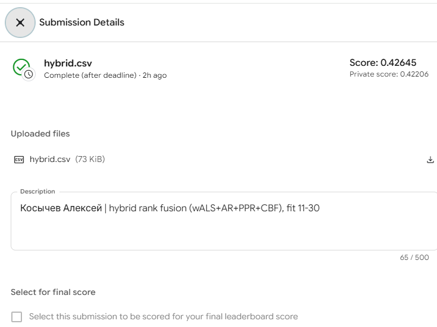
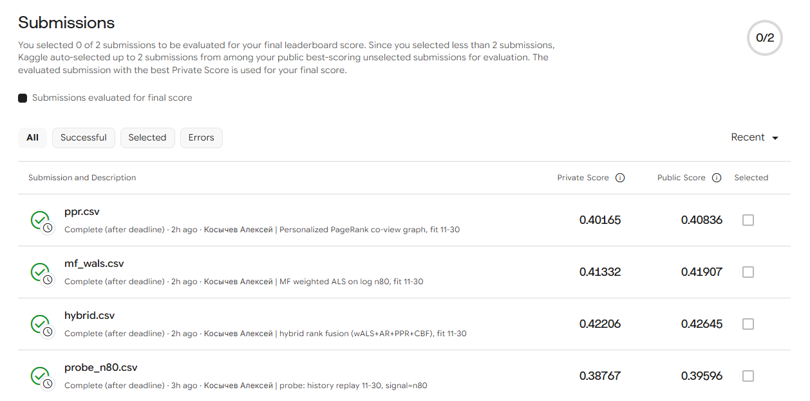
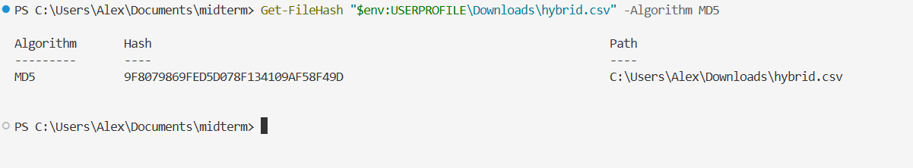
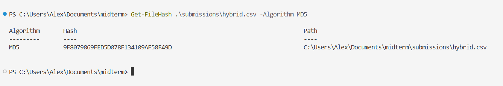
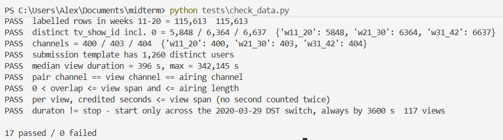
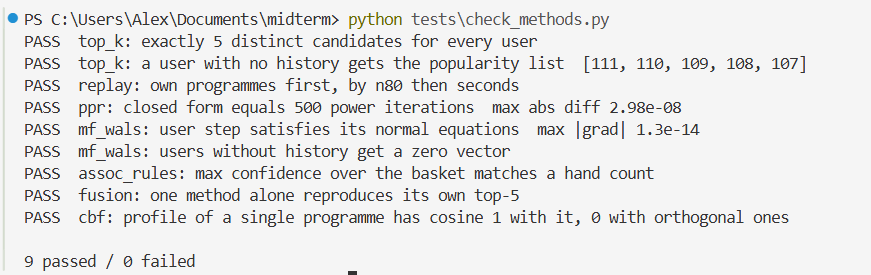

I join 5.8 M views to the broadcast schedule and predict each of 1,260 users' five most-preferred programmes for weeks 31-42. Two submissions that differ only in the ranking signal show that the target behaves like the number of airings a user watched ≥ 80% of in one view (n80). I use that definition for validation: fit on weeks 11-20, score on 21-30.
On that split, a weighted ALS that regresses log n80 is the best single method, at MAP@5 0.324. It is followed by Personalized PageRank (0.319), implicit ALS (0.314), history replay (0.308), association rules (0.277), popularity (0.223) and CBF (0.185). A rank fusion of four methods adds +0.003 on held-out users (95% CI [0.001, 0.005]) and is best in every activity quartile.
The order carries over to the test window. Kaggle public scores are 0.4265 for the hybrid, 0.4191 for weighted ALS, 0.4084 for PageRank and 0.3960 for replay. About 95% of what every history-based method recommends is already familiar to the user: this platform's preferences are mostly habits.
The data. The view log has 5,821,987 views by 4,914 users on 202 channels in ISO weeks 11-30 of 2020. All 1,260 test users appear in it. Only 10.8% of schedule rows (16-17% of airtime) carry a programme id. Labels follow the category: entertainment, films, series and children's shows are 44-86% labelled, sport and music almost never. Yet 56% of viewing seconds land on labelled airings.
The join. A view matches an airing when they are on the same channel and their intervals overlap.
Both sources use local wall-clock time. The 117 views whose duraton differs from stop − start differ
by exactly 3,600 s, and they are exactly the views spanning the 2020-03-29 switch to summer time. View
stops cluster at programme boundaries only when no shift is applied.
Three adjustments follow:
tv_show_id = 0 is unlabelled airtime and never an item.What counts as watched. No view in the log is shorter than 61 s, so zapping has already been removed. Overlaps under 60 s are only the edges of views that straddle a boundary (2.5% of user × airing pairs, 0.05% of seconds), so 60 s is the floor for any interaction. The share of an airing that a user covers is U-shaped: 27% of pairs cover under 5% and 16% cover at least 95%. A search-engine summary of the 2nd-place write-up [1] quotes the organisers' rule as "over 80% of the programme without changing the channel", which defines n80.
Which target. Ranking by seconds, by airings ≥ 60 s or by n80 gives different top-5 lists: an oracle of one definition scores only 0.46-0.57 MAP@5 against another. I submitted history replay twice, ranked once by seconds and once by n80:
| ranked by | public | private | proxy prediction of secs − n80, if the truth is: |
|---|---|---|---|
| seconds | 0.2794 | 0.2494 | secs: +0.064 n60: −0.022 n80: −0.095 |
| n80 | 0.3960 | 0.3877 | observed: −0.117 |
Only the n80 hypothesis fits, so truth = a user's top-5 by n80.
Two log defects. From 17 Jun to 2 Jul the number of users per day halves, and 3 Jul is missing. Sessions longer than 4 h make up 1.4-3.3% of views in weeks 19-24 and 27-30, but at most 0.04% in weeks 11-18. n80 counts airings rather than seconds, which makes it less exposed to both.
Shared protocol.
Methods.
implicit 0.7.3.Validation. Methods are fit on weeks 11-20 and scored on each user's n80 top-5 in weeks 21-30,
against the 21-30 candidates. The metric is MAP@5 over the 4,623 users with a non-empty truth, of whom
1,236 are test users. Hyperparameters are chosen on all users (grids in validation.json). The hybrid's
weights and c are chosen by coordinate ascent on one half of the users and scored on the other (2-fold,
seed 42).
For the submissions, everything is refit on weeks 11-20 + 21-30. Longer history helps: PageRank on 5, 8 and 10 weeks scores 0.303, 0.314 and 0.319. The environment and runtimes are in the repository README.
| method | selected hyperparameters | MAP@5 all | test users | Kaggle public / private | fit, 11-30 |
|---|---|---|---|---|---|
| Popularity | — | 0.2234 | 0.2477 | — | 0.0 s |
| History replay (reference) | — | 0.3079 | 0.3518 | 0.3960 / 0.3877 (probe) | 0.7 s |
| MF (a) implicit ALS | 256 factors, λ = 2, α = 0.1 | 0.3139 | 0.3502 | — | 2.3 s |
| MF (b) weighted ALS | 128 factors, λ = 100, α = 10, 15 sweeps | 0.3241 | 0.3609 | 0.4191 / 0.4133 | 39.1 s |
| Personalized PageRank | β = 0.3, raw co-view counts | 0.3192 | 0.3571 | 0.4084 / 0.4017 | 3.7 s |
| Association rules | min support 20, recent-half basket | 0.2767 | 0.3062 | — | 3.2 s |
| CBF | actors 16, directors 8, decade 0 | 0.1851 | 0.2067 | — | 1.2 s |
| Hybrid (final) | wALS 2, rules 0.5, PPR 0.25, CBF 0.25; c = 10 | 0.3273* | 0.3642* | 0.4265 / 0.4221 | +0.2 s |
Fit times are from experiments/final.json; on this laptop they vary 2-3× between identical runs. * Held-out halves; the two folds chose similar weights (weighted ALS 2 in both). Hybrid − weighted
ALS on the same users: +0.0031, bootstrap 95% CI [0.0014, 0.0049]. MAP@5 by activity quartile (n80 airings in
weeks 11-20, edges 17 / 41 / 81): hybrid 0.167 / 0.273 / 0.382 / 0.483; weighted ALS 0.159 / 0.270 / 0.381 / 0.483;
replay 0.129 / 0.252 / 0.370 / 0.475; popularity 0.140 / 0.202 / 0.263 / 0.286.


Fig. 1. Scores returned by Kaggle. Left: the designated final submission, hybrid.csv, public
0.42645 and private 0.42206. Right: the Submissions tab with the weighted-ALS and PageRank submissions and the
n80 probe. The seconds probe, submitted earlier, is below the rows shown.
Two users. I picked them by a fixed rule before looking at any list, on the validation split where the next window is known. Among test users with a non-empty truth, I took the 90th and the 10th percentile of n80 airings in weeks 11-20. ✓ marks a programme in the user's actual top-5 for weeks 21-30; * marks a programme the user had not watched in weeks 11-20.
| user | method | #1 | #2 | #3 | #4 | #5 | hits |
|---|---|---|---|---|---|---|---|
| heavy: 153 n80 airings, 56 programmes | Popularity | 2400480 ТСН [Инфо] ✓ | 240081 Факты [Инфо] ✓ | 2400467 Викна-Новости [Инфо] | 200344 Чистоnews [Разв] | 2400508 Сегодня [Инфо] | 2 |
| Replay | 240081 Факты [Инфо] ✓ | 2400480 ТСН [Инфо] ✓ | 20088 Завтрак с 1+1. Инф [Разв] ✓ | 200344 Чистоnews [Разв] | 90057471 Х/ф Троя [Фильм] | 3 | |
| MF (a) | 2400480 ТСН [Инфо] ✓ | 240081 Факты [Инфо] ✓ | 200344 Чистоnews [Разв] | 20088 Завтрак с 1+1. Инф [Разв] ✓ | 6700482 Секретные материал [Др] | 3 | |
| MF (b) | 240081 Факты [Инфо] ✓ | 2400480 ТСН [Инфо] ✓ | 20088 Завтрак с 1+1. Инф [Разв] ✓ | 200344 Чистоnews [Разв] | 12001682 М/с Губка Боб Квад [Дет] | 3 | |
| PageRank | 240081 Факты [Инфо] ✓ | 2400480 ТСН [Инфо] ✓ | 20088 Завтрак с 1+1. Инф [Разв] ✓ | 200344 Чистоnews [Разв] | 2400467 Викна-Новости [Инфо] | 3 | |
| Rules | 2400480 ТСН [Инфо] ✓ | 12001682 М/с Губка Боб Квад [Дет] | 240081 Факты [Инфо] ✓ | 2400467 Викна-Новости [Инфо] | 12001732 М/с Пингвины из Ма [Дет] | 2 | |
| CBF | 2400480 ТСН [Инфо] ✓ | 240081 Факты [Инфо] ✓ | 5900347 Деньги [Инфо] | 2500261 Подробности недели [Инфо] | 2400467 Викна-Новости [Инфо] | 2 | |
| Hybrid | 240081 Факты [Инфо] ✓ | 2400480 ТСН [Инфо] ✓ | 20088 Завтрак с 1+1. Инф [Разв] ✓ | 200344 Чистоnews [Разв] | 12001682 М/с Губка Боб Квад [Дет] | 3 | |
| actual 21-30 | 20088 Завтрак с 1+1. Информа [Разв]; 240081 Факты [Инфо]; 2400480 ТСН [Инфо]; 2500413 Гражданская оборона [Инфо]; 10002454 Т/с Гримм [Сер] | ||||||
| light: 13 n80 airings, 12 programmes | Popularity | 2400480 ТСН [Инфо] | 240081 Факты [Инфо] | 2400467 Викна-Новости [Инфо] | 200344 Чистоnews [Разв] * | 2400508 Сегодня [Инфо] | 0 |
| Replay | 2500413 Гражданская оборон [Инфо] | 6500479 Мир наизнанку [Позн] ✓ | 400335 Хата на тата [Разв] | 2400467 Викна-Новости [Инфо] | 1000381 Т/с CSI: Место пре [Сер] ✓ | 2 | |
| MF (a) | 240081 Факты [Инфо] | 2500413 Гражданская оборон [Инфо] | 2400467 Викна-Новости [Инфо] | 6500479 Мир наизнанку [Позн] ✓ | 200337 Утро с Интером [Разв] | 1 | |
| MF (b) | 240081 Факты [Инфо] | 2500413 Гражданская оборон [Инфо] | 2400467 Викна-Новости [Инфо] | 1100411 Вещдок [Позн] | 200337 Утро с Интером [Разв] | 0 | |
| PageRank | 2500413 Гражданская оборон [Инфо] | 240081 Факты [Инфо] | 2400467 Викна-Новости [Инфо] | 6500479 Мир наизнанку [Позн] ✓ | 200337 Утро с Интером [Разв] | 1 | |
| Rules | 240081 Факты [Инфо] | 2400480 ТСН [Инфо] | 2400467 Викна-Новости [Инфо] | 2400508 Сегодня [Инфо] | 20088 Завтрак с 1+1. Инф [Разв] * | 0 | |
| CBF | 2500413 Гражданская оборон [Инфо] | 2400480 ТСН [Инфо] | 240081 Факты [Инфо] | 5900347 Деньги [Инфо] * | 2500261 Подробности недели [Инфо] * | 0 | |
| Hybrid | 240081 Факты [Инфо] | 2500413 Гражданская оборон [Инфо] | 2400467 Викна-Новости [Инфо] | 2400480 ТСН [Инфо] | 1100411 Вещдок [Позн] | 0 | |
| actual 21-30 | 1000381 Т/с CSI: Место преступ [Сер]; 6500479 Мир наизнанку [Позн]; 90057266 Х/ф Терминатор 3: Восс [Фильм] *; 90072084 Х/ф РЭД [Фильм] *; 90082736 Х/ф Человек-паук: Вдал [Фильм] * | ||||||
Categories: [Инфо] news, [Разв] entertainment, [Дет] children, [Позн] factual, [Сер] series, [Фильм] film, [Др] other. MF (a) = implicit ALS, MF (b) = weighted ALS.
My recommendation: the rank-fusion hybrid, led by weighted ALS. Weighted ALS is the best single method on validation, in every activity quartile, and on Kaggle (0.4191). Adding association rules, PageRank and CBF raises the held-out score by a small but significant 0.003. It also raises the public score to 0.4265. Its private score is 0.4221; the frozen leaderboard's best private score is 0.4291. Kaggle ranks the four submitted methods exactly as validation did, which suggests the 11-20 → 21-30 protocol is a fair stand-in for the test.
The whole pipeline costs little: all methods refit in under a minute (50 s in the recorded run) on a laptop for 4,914 users × 7,886 programmes. PageRank's exact inverse grows with the cube of the catalogue, so at a larger scale it would switch to power iteration on the sparse graph.
Familiar programmes, not discovery. In the hybrid's lists for test users, 95% of the items are programmes the user already watched. Their precision is 0.43, against 0.094 for the 5% that are new, or 0.024 new hits per user.
The lists therefore work as a "your programmes, airing now" shelf. They keep the morning show, the evening news and a running series in view. They are not a discovery feed.
An unfamiliar programme is not automatically a discovery. CBF fills 32% of its slots with unseen programmes, yet only 1.2% of those turn out to be among the user's next favourites. Nothing in the data says whether a hit was enjoyed. And "unwatched" only means unwatched on this platform.
How the methods differ.
The two users. For the heavy viewer, replay, both MF variants, PageRank and the hybrid recover three of the five real favourites (Факты, ТСН, Завтрак с 1+1); the rules and CBF recover two. The misses, Гражданская оборона and Гримм, were in the history but ranked below fifth.
The light viewer is the counter-example. Replay hits two (Мир наизнанку, CSI), while weighted ALS and the hybrid hit none: they smooth this user toward the news that similar users watch. The quartile table shows that this is the exception and not the rule. Three of this user's five real favourites were films they had never watched, which no history-based method could have ranked.
Limitations the results support.
AI tools used. Claude Code (VS Code extension), model Claude Opus 5.5, in one session.
How AI was used. Code generation: all of src/, experiments/ and tests/. Analysis: the EDA,
the target probe, the validation grids, the fusion and the examples, all run by the assistant on my
machine. Kaggle: five submissions made through the Kaggle CLI, each one after my explicit approval.
Search: one web search on the competition's target definition. The article it pointed to [1] could not
be opened (HTTP 403), so only the search summary was used. No external code was used. Writing: a draft
of this report.
What I personally verified.
The file in the repository is the file Kaggle scored. I downloaded hybrid.csv from the Submission
Details of the designated submission (Fig. 1) and computed its MD5 in PowerShell, then did the same for
submissions/hybrid.csv in the repository. Both hashes are 9F8079869FED5D078F134109AF58F49D (Fig. 2).


Fig. 2. MD5 of the file downloaded from Kaggle (left) and of submissions/hybrid.csv (right).
The tests pass. I ran tests/check_data.py, which checks the counts from the exam statement, the
join invariants and the summer-time signature: 17 passed, 0 failed. I also ran tests/check_methods.py,
which checks the methods on hand-made data, including the closed-form PageRank against 500 power
iterations: 9 passed, 0 failed (Fig. 3).
The final file is reproducible. I re-ran python experiments/final.py myself. All eight files passed
their format checks, and the regenerated hybrid.csv has the same MD5, 9f8079869fed5d078f134109af58f49d,
as the submitted one. So do mf_wals.csv and ppr.csv. The whole run took 30 s.


Fig. 3. My runs of tests/check_data.py (left) and tests/check_methods.py (right).
Session log. kosychev_midterm_session.jsonl is the unmodified Claude Code log of this work.
[1] "Two-layered recommender system methodology: a prize-winning solution," Towards Data Science. [Online]. Available: https://towardsdatascience.com/two-layered-recommender-system-methodology-a-prize-winning-solution-c4bdb815b156. Only a search-engine summary was read: the page returned HTTP 403. [Accessed: 2026-10-22].
[2] Y. Hu, Y. Koren, and C. Volinsky, "Collaborative Filtering for Implicit Feedback Datasets," in Proc. 8th IEEE Int. Conf. Data Mining (ICDM), 2008, pp. 263–272.
[3] G. Jeh and J. Widom, "Scaling Personalized Web Search," in Proc. 12th Int. Conf. World Wide Web (WWW), 2003, pp. 271–279.
[4] R. Agrawal, T. Imieliński, and A. Swami, "Mining Association Rules between Sets of Items in Large Databases," in Proc. ACM SIGMOD, 1993, pp. 207–216.
[5] P. Lops, M. de Gemmis, and G. Semeraro, "Content-based Recommender Systems: State of the Art and Trends," in Recommender Systems Handbook, Springer, 2011, pp. 73–105.
[6] G. V. Cormack, C. L. A. Clarke, and S. Büttcher, "Reciprocal Rank Fusion Outperforms Condorcet and Individual Rank Learning Methods," in Proc. 32nd ACM SIGIR, 2009, pp. 758–759.
[7] ogurbych, "sweet.tv — TV program recommender," Kaggle community competition, 2020. [Online]. Available: https://www.kaggle.com/competitions/sweettv-tv-program-recommender. [Accessed: 2026-10-22].